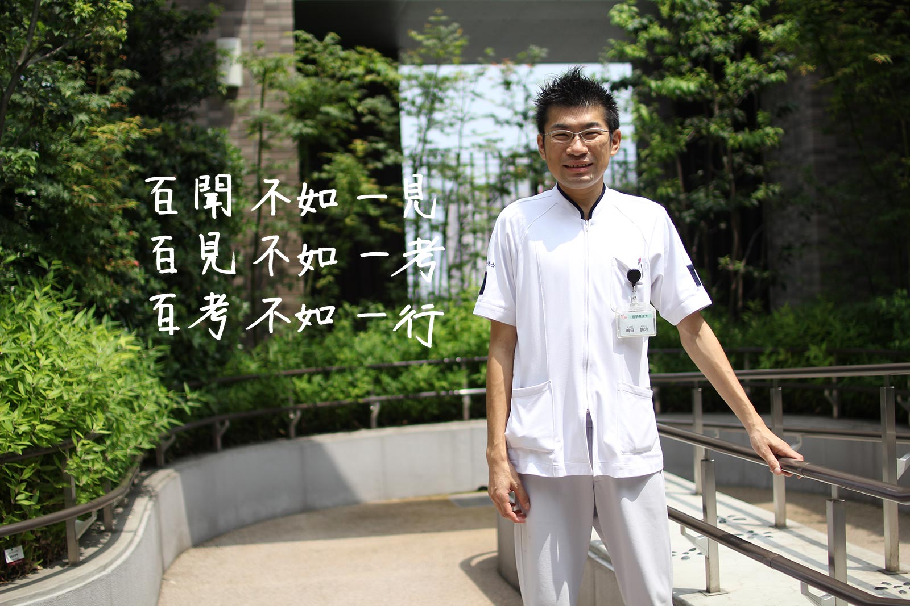

理学療法士
Physical Therapist もどる
もどる

■小倉記念病院で乗り越えた壁
『初めからできる人はいない。
荷を背負うから、それに耐えうる体力がつく。』
大勢の人の前で話すのが苦手な私ですが、小倉記念病院では多くの課題を与えて頂きました。学会発表や市民公開講座、今まで自分には荷が重すぎるといって避けてきたことが一気に押し寄せてきた時がありました。『初めからできる人はいない。荷を背負うから、それに耐えうる体力がつくのだ。』という恩師の言葉を思い出し、多くの支援を得ながら何とか終えることができました。今では当時の経験が自信へとつながり、乗り越えた壁はいつしか自分を守る盾になるのだなと思っています。専門職だからこそ自信を持って、安全により良い医療を提供することが重要であると考えています。
■小倉記念病院を志望した理由
医療を通じた恩返し
私が理学療法士となったのは1997年のことです。初任地は臨床実習で2ヶ月間お世話になった県外の病院でした。失敗も多々ありましたが、リハビリの基礎を諸先輩方から8年間学び育てて頂きました。それと共に、様々な分野で活躍していくリハビリ学校時代の友人の姿に刺激を受け、自分も新たな場所で可能性を試してみたいという想いが大きくなりました。加えて、生まれ育った地域の医療に貢献したい気持ちもあり小倉記念病院を志望しました。新しいことへのチャレンジは勇気のいることですが、同級生や旧職場の先輩後輩の後押しもあり、夢が実現しました。小倉記念病院に就職してからは、新たな認定資格も取得し、仕事の幅も増えました。また、院内で知人や恩人に出会う機会もあり、医療を通じ恩返しができ嬉しく思う毎日です。
理学療法士の1日